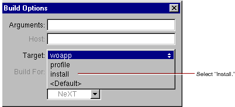

Table of Contents
Table of Contents  Next Section
Table of Contents
Next Section
Table of Contents  Previous Section
Previous Section
In previous versions of WebObjects, it was typical to store the entire project under the web server's document root. This practice has advantages for turnaround time during development. However, in deployment, it presents the possibility of allowing users access to your source code. WebObjects has a "split installation" feature that allows you to install only those files (such as images) that the web server must have access to under the document root. The remaining files can be stored elsewhere.
The same procedure applies to installing WebObjects applications and frameworks. To install:

The full application wrapper is copied into the "Install In:" directory, and a wrapper containing only the Web Server Resources is copied into the document root.
Table of Contents Next Section